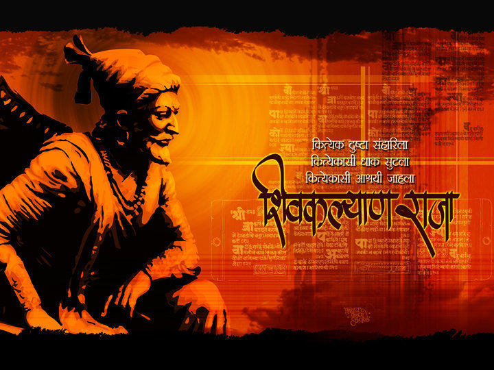

<!DOCTYPE html>
<html lang="en">
<head>
    <meta charset="UTF-8">
    <meta http-equiv="X-UA-Compatible" content="IE=edge">
    <meta name="viewport" content="width=device-width, initial-scale=1.0">
    <link rel="stylesheet" href="./style.css">
    <title>Tribute Page</title>
</head>
<body>
    
</body>
</html>


<div class="container-fluid" style="text-align: center;">
    <div class="" id="page-wrapper">
      <h1 class="text-primary text-center">A Tribute Page: Chatrapati Shivaji Maharaj</h1>
      <div class="row">
        
      </div>
      <div class="row">
        <h2>Information about Shivaji Maharaj</h2>
        <div class="info-paras">
          <p>The history of India is full of the stories of countless heroes and gallants. Their deeds of bravery, gallantry, chivalry and heroism have left indelible marks. Shivaji is one of those Indian heroes who have been acknowledged as the most worthy and remarkable personalities. He was born in 1627. His father Shahji was a small Jagirdar. His mother Jija Bai was a very pious and intelligent woman. She moulded the early life of Shivaji in a way that it dazzled like a star. She infused in him the burning love for his motherland. Right from beginning Shivaji had been a fearless, brave and kind soldier. That is why he is called the ' Defender of the Hindu religion."</p>
  <p>His boyhood proved the saying of Wordsworth, who wrote "Child is the father of man." He was very promising, shrewd, intelligent and patriotic right from his childhood. As a matter of fact, his mother was his first teacher who directed the early life and living of Shivaji in a manner that he came to be known as a fearless fighter, a brave solider and great patriot of India.</p>
  <p>He could not tolerate as countrymen being oppressed under the tyranny of Muslim rule. So, he collected some chieftains, Jagirdars and others in order to free his countrymen from the oppression. He conquered the state of Bijapur and other Mughal territories. Aurangzeb could not tolerate this and he sent Shaista Khan to fight against him. Shivaji gave Shaista Khan a crushing defeat
  Shivaji being a shrewd politician and an intelligent statesman proved more than a match for the tactics of Aurangzeb. Aurangzeb's attempt to imprison him failed. Shivaji also sensed the mischief of Afzal Khan and murdered him before he could attack Shivaji. Aurangzeb once made Shivaji a prisoner in Delhi, but the latter, with his intelligence thought of a plan and escaped from the prison with the help of the jail guards in a basket of sweets.</p>
  <p>All that Shivaji grabbed during battles was distributed equally among the poor. In battles, Shivaji observed all the cannons of morality and decency of behaviour; he did not touch children, women and old persons. Rather, they were protected by him. This shows Shivaji's secular outlook and generous heart. Mauser Germaine, the French envoy at the time of Shivaji, also paid tributed to the secular greatness and humanitarianism of Shivaji
  Shivaji will go down in Indian history as the defender and saviour of Hindu religion. He gave the enemies of Hindu religion a hard blow and established Marhatta Raj. But after his death in 1680, the entire citadel of Shivaji began to disintegrate because of the quarrels and conflicts among chiefs and jagirdars. But for Shivaji, Aurangzeb would have destroyed the entire Hindu religion. The entire Hindu community is proud of this valiant son of India whose deeds of chivalry and bravery have inspired the millions of Indian youths. Shivaji has become an immortal hero of history of India.</p>
        </div>
      </div>
      <div class="footer">
        <p><em>Please visit</em> <a href="https://en.wikipedia.org/wiki/Shivaji" target="_blank">Wikipedia</a>.</p>
        
      </div>
    </div>
  </div> 